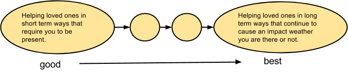

There is a great deal of literature detailing how some of a person’s actions can be mapped back to a selfish or sexual drive. The purpose of this paper is to establish a possible selfless drive, and attempt to use a minimal amount of mental gymnastics to map it back to some common actions seen in people today.
This is more written in the style of 1970s psychological papers that were more about theory and less about empirical studies. Some proposals on how to perform scientific tests on this are touched upon, some may be detailed later.
Personally, I’ve met a few people who’ve made major life decisions (like being a shut in, or never giving others a chance) based on the idea that people aren't worth the effort because they all share core negative qualities. Might as well try to get some research to test aspects of those ideas.
From the start, a child who is driven or partially driven by selfless feelings wants to give their parent the best. Two main trains of thought this selfless drive takes is “How They Are Seen”, and “How They Are Treated”. These trains of thought may affect each other.
How They are Seen relates to how a child perceives the parent. A parent looks as though they are wise, well adjusted, and whole and all of their confidently taken actions are well reasoned, accountable, and strong minded*. If the parent takes an action and doesn’t specify† that they did not put much thought into it, the child freely assumes that this action is rational, and good. The best is giving them the benefit of the doubt.
How they are Treated relates to a child’s internal willpower, planning, skill, and goal setting to give the parent the best. Perhaps it’s how they measure their development as a human, or what they wish to do with their development. They may be willing to sacrifice priority on other goals to achieve this one.
They may also sacrifice parts of themselves to improve their ability to help their parents. With the child having a pure, ungrounded, disembodied trust in the parent they wish to help, they might replace aspects of themselves with what they think their parent wants. This might include their morals, identity, and ability to help in less profound ways. Good children would sooner lie, cheat, and steal then assume negative qualities about their parents.
If a parent doesn’t specify that they have neutral or negative qualities, a child might only prepare themselves for helping those who have perfect qualities, and may run into great difficulty traveling this path.
An example of an unmitigatedly selfless explanation for why a child gets so catastrophically upset when another child takes their toy is as follows: Perhaps this child wants to prepare for setting up only the best scenes they could imagine to one day be able to do the same for their loved ones. To lose anything that keeps them from being the best is devastating.
*What are the most common positive qualities assumed when children assume the best? Which positive qualities are not? If there are any negative qualities, what are they? Might be worth testing.
† Something to test: does an adult who specifies they haven't thought some of their actions through improve the relationship with a child?
Disembodied Trust: Believe that another person's actions and reasons for doing things are positive. It is so expected they are positive, they have not considered the possibility that the person would have neutral, negative, or no known reason for what they do. There may not even be any consideration on how to tell whether this person is indeed one who makes their decisions for positive reasons.
Act of Disembodied Trust: An action where the expected response is something positive. It is so expected, that they have not considered the possibility that the person would respond neutrally or negatively. They neither prepare responses for a negative outcome, nor considered they could.
Preparing for negative/neutral responses for someone could be* an action that goes against the words or feeling “I trust you.” Trust being used in a binary "you either trust someone or you don't" sense.
Little Susy is with her daddy when she sees a bird flying by, she asks him why birds have wings, trusting her dad is not a total limeweed. He responds with “What are you, stupid!?”. She does not know what to say or think, she just goes along with what he says.
Little Billy is bored at home. He is so comfortable he gets a case of the sillys and pretends he’s a duck. He goes to show his mom. “Quack quack, im a duck!” His mother yells,”no you are not!, I'm busy making pee-dunk stew! get out of here before I END you” Billy is as lost as he is confused.
*maybe worth testing. Perhaps all normal children feel that the act of preparing for negative responses is a betrayal of trust.
For someone with an Unmitigatedly Selfless drive, the closer you are to someone, the better you are able to help them. For this paper, I will introduce a scale that measures how close you are by how enabled you are to help them.
“If you love something, set it free. If it comes back, it is yours. If it doesn’t, it never was.” —Unknown

As discussed earlier, a person that wants their loved one to have the best is willing to sacrifice helping in lesser ways to help in greater ones. They may have limited patience for helping loved ones in short term ways. They will want to help their loved ones in long term ways that makes a lasting impact.
There are 2 types of relationships, one of a child or subordante to an athurity figure, and one of adults or peers. The higher the numbers get, the better one is able to help, because they are closer.
Scientists have been known to be passionate to test and assure themselves of a particular set of results. In school and professionally, people write papers. They may pore tons of effort researching from different sources, making sure they understand everything about it. They prepare themselves to give speeches on it, they try to learn even more so they will be prepared for various questions from the audience.
There is a huge gap of effort on what people are prepared to do professionally and personally in most relationships. How often do you hear loved ones ensure they understand another’s perspective correctly as a scientist would retesting results? How often do you hear loved ones treating each other's perspective as if they are the only source of informations for an important paper they are writing? How often do loved ones understand the other’s perspective enough to give a speech about it, and answer questions on it?
“What can I do to deserve the same amount of effort my loved one puts in their job?” might be a question asked by individuals with this selfless drive.
“I used to be afraid of new technology until my son showed me how useful it could be.”
“I used to only like bonding over sports, but my son showed me different ways to bond.”
“I used to be single until my friend introduced me to my wife.”
"I used to treat everyone nice until my son showed me you have to be always suspicious."
"I used to treat everyone with suspicion till my daughter showed me it’s better to be friendly to everyone."
“I used to walk in my neighborhood without pepper spray or a taser till my son showed me it wasn’t safe.”
“I used to think we should force people to not commit suicide, but my child showed me that there is little you can do to stop it and keep their freedom.”
“I used to think ‘just be yourself’ was good advice till my relative helped me understand that he felt most himself killing people.”
A person wants to deliver the best to their loved ones but they fall too low on the stages of closeness. They figure that, because their loved one is very busy and mature, the loved one must be very selective about who they allow to help them. They strive to be more and more impressive by trying to be strong, mistake free, wise, indomable, a good predictor of outcomes. They may assume different identities, chosen by clear communication (“maybe if I conform enough, they’ll listen”) or vaguely assumed, in an effort to impress. They may cycle through different identities and even “adopt” different parents or loved ones to try them on.
If/when they fail to make headway getting closer they may push themselves harder and harder down the path of the identity and take it to self-sacrificial extremes. Before that happens, they may try unconventional ways to communicate their frustration, fear of what they are becoming, and desire not to go as far as they are willing to go (“maybe if I act out, they’ll listen”) . They might realize that there is nothing they can do to overcome their loved one’s defences to be affected by a profound lasting impact. Even if they succeed at getting closer, they may have no idea what to do, or remember why they adopted the identity in the first place.
With very few people being public about their personal prerequisites before they are willing to ask advice of someone, most are left with trying very hard to be impressive. This might be an explanation for why it’s so easy to let embarrassing chance experiences get to you, and why sometimes people get very upset when others doubt their intelligence/skills/ability. Would you be willing to ask deep life advice from someone who’s pants just fell down?
Also, along the way of trying to get closer to a loved one, someone’s normal insight into solutions to problems might not seem like enough for inquiry, they might push harder and harder to try to appear almost like a clairvoyant, godlike oracle.
Selfless Identity Adoption: one of the main reasons someone adopts an identity is to get closer to someone else and fulfill their selfless needs. They may not care if they sacrifice parts of themselves to do so.
Some good examples of people adopting self sacrificing identities are sometimes obvious in school settings.
A child may start making fun of other kids and risk hurting them so they get a chance to get popular and closer to other kids and maybe find a way to help them someday.
A child wants to seem more cool and wanted, and adopts a “I don’t care about the world” type of persona, when they actually do care a great deal, but they need to get closer to help someone.
Sacrifice Communication: When someone is very frustrated about their inability to get close to a loved one enough to communicate ways to help them, and is so afraid of what they are prepared to become to get that close, they might first act in unconventional, attention grabbing ways to communicate.
With the possibility of disembodied trust coming into play, there are 2 outcomes they hope their loved ones would present:
*both of these may would be worthwhile to test, in some instances where children act out.
What if Disembodied Trust is true? Teaching your children and loved ones how to cope with negative responses while simultaneously ‘meeting them halfway’ and being ready not to disappoint them when they hit you with an act of disembodied trust may make for the healthiest future for all parties involved.
What if Selfless Identity Adoption is true? What if people judge on weather identities are “right for them” based on how well they are able to help others? Perhaps people being more public about what qualities a person has, or what they need to experince with them, before they allow another to get close enough to have a profound impact would be more helpful to everyone.
What if unmitigated selflessness is true? What if you have, or will have, a loved one who is driven mostly by it? What would that mean for society? Should we try to make ourselves more open to profound positive impacts, or should we put more focus on trying get them to let go of that naive ambition?